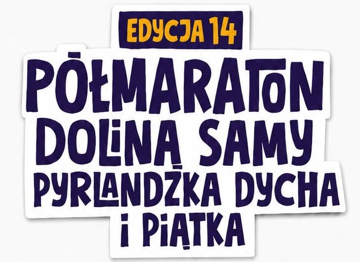
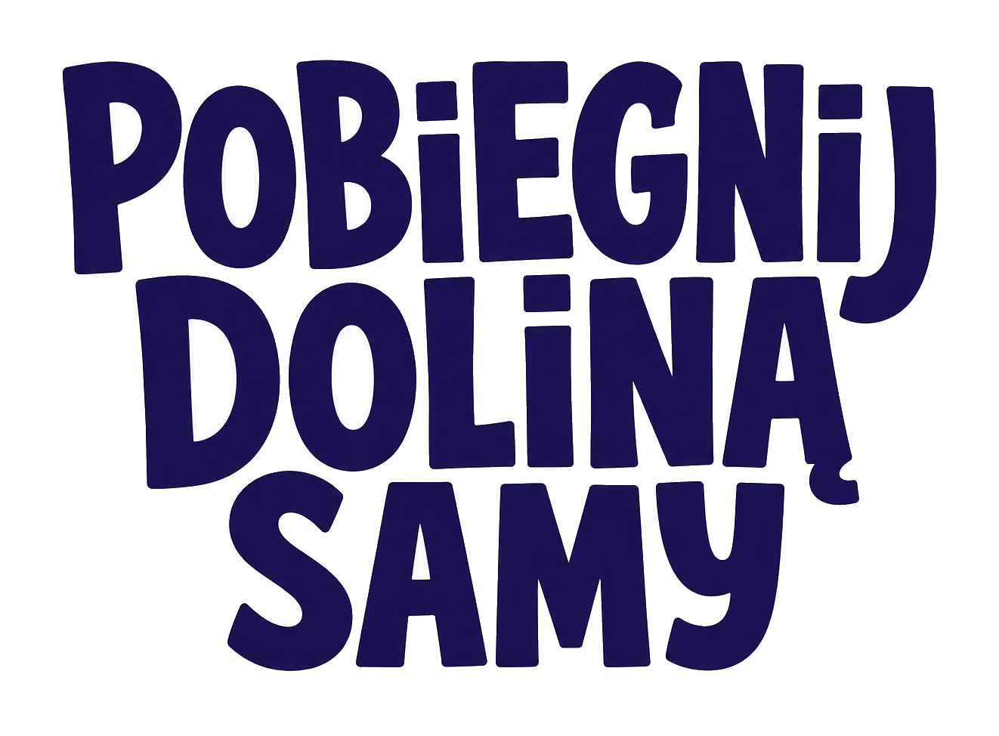
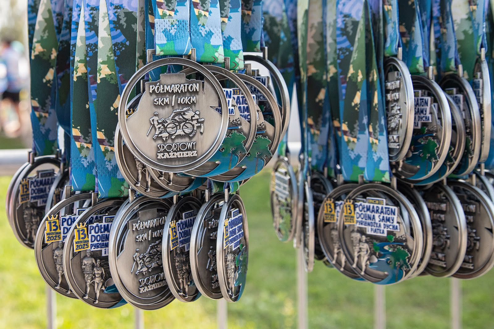
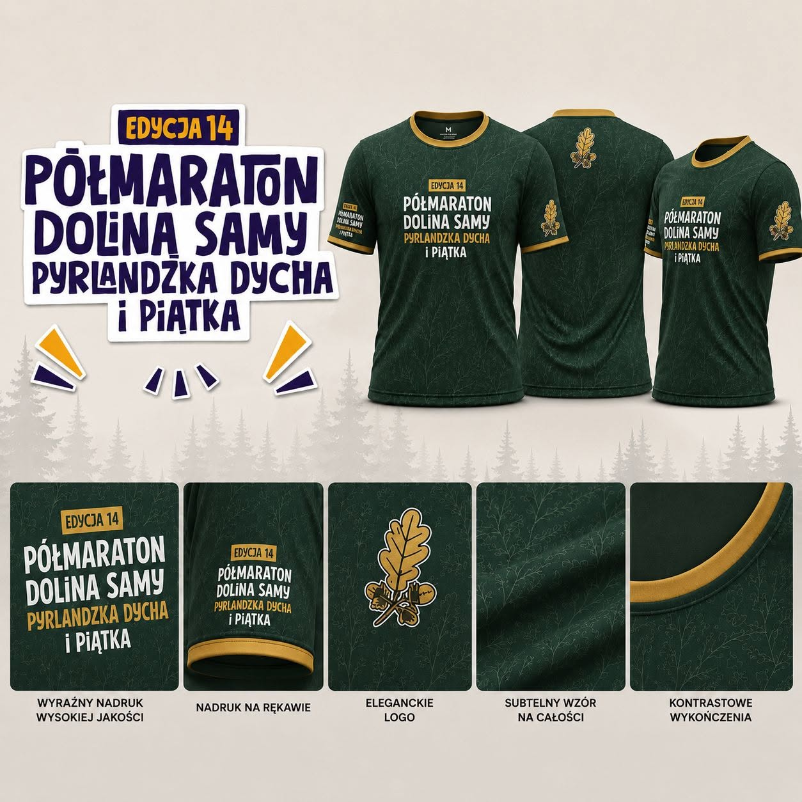

Otwarcie
Biuro zawodów
Odbiór numerów i pakietów startowych.

14. edycja Kaźmierz • Wielkopolska

Sportowe emocje, lokalna energia i trasa, do której chce się wracać. Wybierz swój dystans i spotkajmy się na starcie.
Następna edycja
Termin wydarzenia: 13 września 2026
Aktualności
Najświeższe informacje organizacyjne, komunikaty dla zawodników i materiały z przygotowań publikujemy na profilu wydarzenia.
Przejdź na Facebook ↗Partnerzy wydarzenia
Z energią od ENEA widzimy się na starcie
Bieg z charakterem

poprzednia edycjaTo lokalne święto sportu, stworzone dla doświadczonych biegaczy, debiutantów, rodzin i kibiców. Malownicza trasa prowadzi przez serce gminy Kaźmierz, łącząc sportową rywalizację z wyjątkową atmosferą.
Znajdź swój dystans
Główny dystans
Wyzwanie dla tych, którzy chcą poczuć pełnię sportowych emocji i zobaczyć najpiękniejsze zakątki okolicy.
Dzień zawodów
Odbiór numerów i pakietów startowych.
Energetyczne przygotowanie w strefie startu.
21,097 km przez Dolinę Samy.
Pyrlandzka Dycha, Piątka i Nordic Walking.
Nagrody, muzyka i wspólne świętowanie.

Koszulka edycji 14
Pamiątkową koszulkę można dodać podczas zapisów online. To mocny element identyfikacji wydarzenia i dobry powód, żeby pokazać ją wyraźnie na stronie.
Przed startem
W wersji docelowej znajdzie się tutaj dokładny adres, mapa dojazdu, godziny pracy oraz informacje o parkingach.
Zasady zmiany dystansu należy uzupełnić zgodnie z regulaminem organizatora.
Koszulka, numer startowy z chipem, medal po ukończeniu biegu oraz świadczenia regeneracyjne.
Takie informacje warto pokazać na osobnej, prostej mapie sytuacyjnej przed wydarzeniem.
Gotowy na wyzwanie?
Wybierz dystans, zapisz się i zacznij przygotowania do kolejnej edycji.